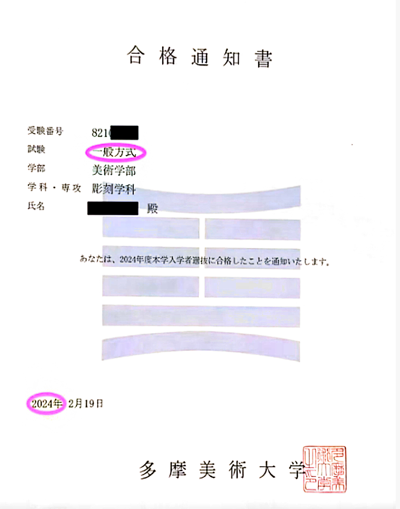

围绕目标大学和学部的募集要项、笔试科目、历年题型与面试要求安排专项准备。课程形式根据学校与科目确定。

不同学校的笔试范围、形式和面试要求差异较大，不采用统一模板。
确认考试科目、提交材料、日程和资格条件。
结合历年题型安排知识复习、练习与原创模拟题。
志望理由、专业理解、常见问题与模拟面试。
这是目前公开展示的一个校内考对策案例，并非校内考业务的全部范围。
数学・物理・化学笔试，原创模拟题，模拟面试。
请提供学校、学部、考试科目、募集要项和预计考试时间。